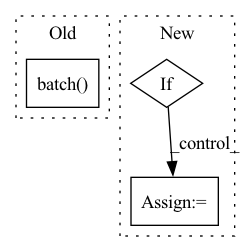

Pattern ID :17435

Before Change
if test_dataset is not None:
test_process = RandomProcessImageWithBboxes(target_shape=input_shape, resize_method=resize_method, resize_antialias=resize_antialias, magnitude=-1)
test_dataset = test_dataset.map(test_process).map(lambda xx, yy: (xx, bbox_process(yy[0], yy[1])))
test_dataset = test_dataset.batch(batch_size).map(lambda xx, yy: (rescaling(xx), yy))
return train_dataset, test_dataset, total_images, num_classes, steps_per_epoch
After Change
train_dataset = dataset["train"].shuffle(buffer_size).map(train_process).batch(batch_size)
// return train_dataset
if mosaic_mix_prob > 0:
mosaic_mix = lambda xx, yy: tf.cond(
tf.random.uniform(()) > mosaic_mix_prob,
// lambda: (xx, tf.pad(yy[0])),
lambda: (xx, yy),
lambda: mosaic_mix_batch(xx, yy[0], yy[1]),
)
train_dataset = train_dataset.map(mosaic_mix, num_parallel_calls=AUTOTUNE)
// return train_dataset
mean, std = init_mean_std_by_rescale_mode(rescale_mode)
In pattern: SUPERPATTERN
Frequency: 3
Non-data size: 3
Instances
Fragment ID: 57759344
Project Name: leondgarse/keras_cv_attention_models
Commit Name: 72442f0cd3114eb4a7a30ae1a58e568c70d93172
Time: 2022-02-24
Author: leondgarse@gmail.com
File Name: keras_cv_attention_models/coco/data.py
M Class Name: AnonimousClass
N Class Name: AnonimousClass
M Method Name: init_dataset(17)
N Method Name: init_dataset(15)
M Parent Class:
N Parent Class:
M File Name: keras_cv_attention_models/coco/data.py
N File Name: keras_cv_attention_models/coco/data.py
M Start Line: 359
M End Line: 378
N Start Line: 434
N End Line: 496
'>
Before Change
// [num_devices, batch_size_per_device].
batch_size_per_device = math.ceil(process_batch_size / num_devices)
flat_batch_size = batch_size_per_device * num_devices
ds = ds.batch(flat_batch_size, drop_remainder=drop_remainder)
def f(xs):
return _pad_reshape_batch(_add_mask(xs, 1), flat_batch_size, num_devices)
After Change
ds = ds.repeat(num_epochs)
mask_fn = lambda ex: dict(mask=1., **ex)
if preprocess_fn is not None:
preprocess_and_mask_fn = lambda ex: mask_fn(preprocess_fn(ex))
else:
preprocess_and_mask_fn = mask_fn
'>
Fragment ID: 57759333
Project Name: google/uncertainty-baselines
Commit Name: 5ef136b370a87f81dc0d0f1f57757d0432b2bc6a
Time: 2022-05-17
Author: dusenberrymw@google.com
File Name: baselines/jft/input_utils.py
M Class Name: AnonimousClass
N Class Name: AnonimousClass
M Method Name: get_data(15)
N Method Name: get_data(15)
M Parent Class:
N Parent Class:
M File Name: baselines/jft/input_utils.py
N File Name: baselines/jft/input_utils.py
M Start Line: 291
M End Line: 344
N Start Line: 267
N End Line: 324
'>
Before Change
rescaling = lambda xx: (xx - 127.5) * 0.0078125
as_one_hot = lambda yy: tf.one_hot(yy, num_classes)
train_dataset = train.shuffle(buffer_size).batch(batch_size).prefetch(buffer_size=AUTOTUNE)
test_dataset = test.batch(batch_size).map(lambda xx, yy: (rescaling(xx), as_one_hot(yy)))
if mixup_alpha > 0 and mixup_alpha <= 1 and cutmix_alpha > 0 and cutmix_alpha <= 1:
After Change
)
train_dataset = dataset["train"].shuffle(buffer_size).map(lambda xx: train_process(xx), num_parallel_calls=AUTOTUNE)
if isinstance(rescale_mode, (list, tuple)): // Specific mean and std
mean, std = rescale_mode
rescaling = lambda xx: (xx - mean) / std
elif rescale_mode == "torch":
mean = tf.constant([0.485, 0.456, 0.406]) * 255.0
'>
Fragment ID: 57759341
Project Name: leondgarse/keras_cv_attention_models
Commit Name: a646fd3f03c9baa0ab6619de8f6b2f269d5d10e6
Time: 2021-10-31
Author: leondgarse@gmail.com
File Name: keras_cv_attention_models/imagenet/data.py
M Class Name: AnonimousClass
N Class Name: AnonimousClass
M Method Name: init_dataset(14)
N Method Name: init_dataset(14)
M Parent Class:
N Parent Class:
M File Name: keras_cv_attention_models/imagenet/data.py
N File Name: keras_cv_attention_models/imagenet/data.py
M Start Line: 305
M End Line: 339
N Start Line: 332
N End Line: 373